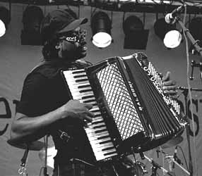

- ATB's Who's Who -
- ATB's Who's Who -
Родился в семье сезонных сельских рабочих. В детстве и юношестве работал на хлопковых и сахарных плантациях. Первые уроки игры на аккордеоне получил от отца. Вместе со старшим братом Кливлендом (Cleveland Chenier), игравшим на стиральной доске при помощи консервных ножей, начал выступать по выходным дням на деревенских танцплощадках, исполняя традиционные для Луизианы франкоязычные песни в стиле "Зайдекоу/Кейжун". С 1947г. вместе с братом работал на нефтеперегоночном заводе в Порт Артуре, Луизиана, продолжая исполнять музыку по уик-эндам. С этого времени начинает много слушать радио и испытывает значительное влияние популярного стиля "ритм-энд-блюз". Смесь Луизианских тустепов и вальсов с ритмэндблюзовой и рокнролльной энергетикой делают группу братьев Шеньер (в которой работал тогда молодой гитарист Лонни Брукс) местной сенсацией. Танцевальная музыка становится их постоянной работой. Вскоре Клифтон Шеньер уже разъезжает в "Кадиллаке". В 1954г. записывает дебютный сингл для местной фирмы грамзаписи. В следующем году подписывает контракт с более крупной фирмой "Спешиалити"(Speciality) и выпускает следующий сингл, демонстрирующий перекраивание традиций "зайдекоу" по модным ритмэндблюзовым меркам. Пластинка становится хитом на местных радиостанциях. Шеньер спешит закрепить успех гастролями, но сугубая музыкальная локальность вынуждает его ограничиваться штатами Луизиана и Техас. В этот период в его группе играет достаточно известный теперь блюзовый гитарист Филипп Уокер (Phillip Walker). В 1956-1957гг. записывает несколько синглов для "Чесс" (Chess), однако это сотрудничество оказалось недолгим. В группе Шеньера делает первые профессиональные шаги 17-летняя певица Этта Джеймс (Etta James), которой в связи с ее юным возрастом Клифтон Шеньер был официально назначен опекуном. С появлением в США значительного интереса к народной музыке начинается новый этап творчества Шеньера. В 1964г. он записывает дебютный альбом для чикагской фирмы "Архули"(Arhoolie), возвращаясь к музыке "зайдекоу" не утратив рокнролльного напора. Его исполнительский стиль игры на аккордеоне глубоко индивидуален. Кроме того, он играет на клавишных инструментах и губной гармонике. Кливлэнд Шеньер, удерживая по три консервных ножа в каждой руке, демонстрирует виртуозное владение своим нехитрым инструментом - рэббоард (rabboard, в переводе - терка, стиральная доска; по сути - гофрированный стальной лист), создавая ритмическое поле высокой напряженности. Они много записываются, выступают на фестивалях, гастролируют по США и Европе, в том числе в рамках ревю "Американский фолк-блюзовый фестиваль" (American Folk Blues Festival). В конце70-х к группе Клифтона Шеньера присоединяется гитарист Дэнни Кэрон (Danny Caron), позже работавший с Чарлзом Брауном (Charles Brown). Нынешняя "звезда" стиля "зайдекоу" Бэкуит Зайдекоу (Buckwheat Zydeco) в это время играет в группе на клавишных инструментах и практикуется в аранжировке. Клифтон Шеньер гастролировал почти безостановочно, пока заболевание диабетом не заставило его отказаться от поездок. "Король зайдекоу" был настолько ослаблен болезнью, что в 1982г. на записи альбома для чикагской фирмы "Эллигейтор" он вынужден использовать электронный аккордеон. Он вновь пытается подновить звучание любимой музыки в соответствии с требованиями широкой публики и записывает композицию "Диско Зайдекоу". Но ни напрасные заигрывания с модой, ни неотвратимая болезнь - ничто не могло сбить Клифтона Шеньера с пути истинного "зайдекоу". Альбом удостоен Грэмми. И следующий, последний, прощальный свой альбом, отмечая,  как высоко ему удалось поднять музыку родной луизианской деревни, Клифтон Шеньер называет "Country Boy Now Grammy Award Winner" - "Был деревенский парень, а теперь - лауреат премии Грэмми".Как истинный король, Клифтон Шеньер позаботился оставить наследника. Си-Джи Шеньер (C.J.Chenier), начинавший музыкальную карьеру как джазовый саксофонист, сегодня с аккордеоном в руках успешно продолжает главное дело всей жизни отца: традиционная музыка "зайдекоу" должна быть созвучна новому времени. ВЭБ™'99
Дискография (выборочно):
Фильмография:
Дискография C.J.CHENIER:
В сети: |